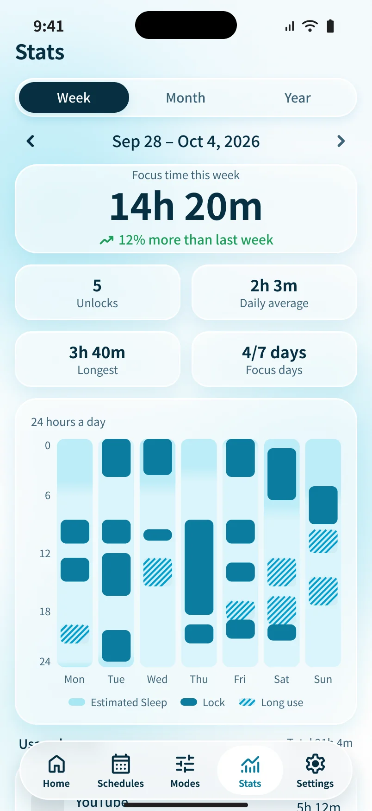
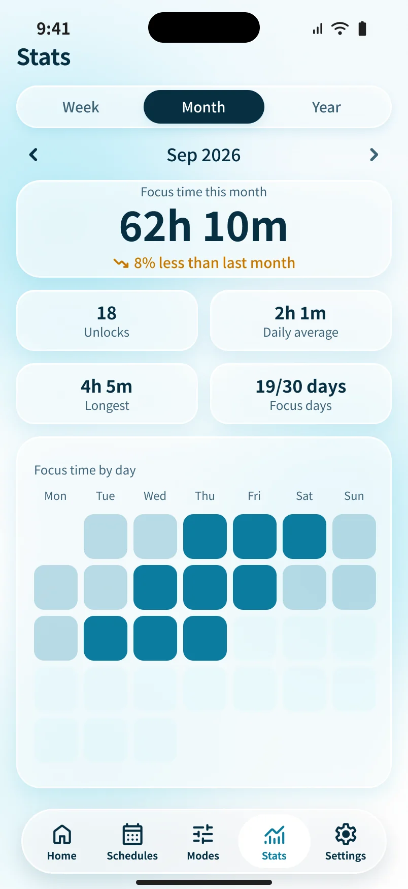
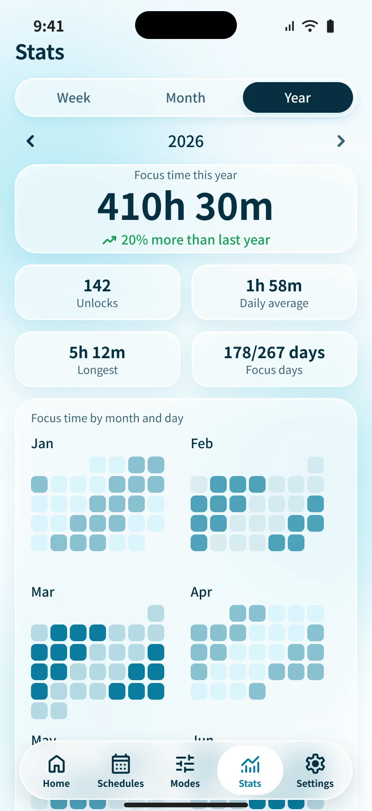

Your transit card is now your phone lock.
Atoll keeps your distracting apps locked during the hours you pick. Tap a card you already carry for a 15-minute break, and it locks itself again when the time is up.
Built for iPhone. Uses Apple's Screen Time framework.


Locked by default. Open for a while.
Pick your hours once. After that, the only thing you decide is when to take a break.
Pick what to block
Apps, whole categories and websites. The ones you use most this week sit at the top of the list.
Set your hours
Weekday mornings, every night, whatever fits. Atoll locks when the hours start and lets go when they end. Need it sooner? Lock now works any time.
Tap for a break
Touch a card you already own, or hold the button for a few seconds. You get 15 minutes, then the apps lock again without you doing a thing.
Your whole day on one ring.
Sleep, locked time and long stretches on your phone all sit on one 24-hour circle, so a quick look tells you how the day went.
- Always know where you stand. Home shows what is locked right now, or how long until the next lock.
- Four breaks a day. That is the default. They refill each morning, so a break is something you choose, not something you drift into.
- An emergency exit. Three a month. Press it, wait 15 minutes, and your apps open until that schedule ends.
Different hours, different rules.
A mode is a list of apps and sites to block. A schedule says when. Combine them to fit your week.
- Apps and websites together. A blocked app should not just move to the browser.
- Pick from what you really use. Start from your most-used apps, or block a whole category in one tap.
- Breaks that fit you. 15 minutes by default, and you can change the length and the daily limit in Settings.

See the hours you got back.
Switch between week, month and year. See how long you stayed locked, how many breaks you saved and how many days you showed up.
- Numbers that mean something. Locked time per day, breaks saved, your longest lock and your focus days.
- Tap any day. See its ring and every lock session, scheduled or manual.



Small things that matter.
A card, not a gadget
Use a transit card, student ID or NFC sticker you already have. Atoll only reads its ID and never writes to it.
Lock now, any time
Outside your schedule? Pick a mode and lock right away. It follows the same rules as a scheduled lock.
Light and dark
Follows your iPhone, day and night.
Streaks
Lock at least once in a day and the streak carries on.
Strict mode
Deleting Atoll mid-lock is blocked, so you cannot dodge your own schedule. You can switch it off.
Sign in with Apple
Your modes, schedules and history live in your account, so a new phone picks up where the old one stopped.
Questions, answered.
When is Atoll coming out?
It is being built for iPhone now. Leave your email above and we will tell you the day it reaches the App Store.
How is this different from Screen Time?
Screen Time limits come with an Ignore button. Atoll asks for a card tap or a deliberate hold, gives you a fixed number of breaks a day, and locks again on its own.
Do I need to buy NFC tags?
No. A card you already own works, like a transit card or student ID. Holding the button also works, with no card at all.
What if I need my phone in an emergency?
Use the emergency unlock. You get three a month. Press it, wait 15 minutes, and your apps stay open until that schedule ends.
Which apps and sites can it block?
Whatever you choose. Atoll uses Apple's Screen Time framework to block the apps and categories you pick, plus the websites you list.
Is it free?
You can start for free. A Pro plan adds more modes, schedules and history. We will share pricing closer to launch.
What do I need to run it?
An iPhone on iOS 26.4 or later.
Does it work on Android?
Not yet. iPhone comes first.
What do you do with my data?
We use your email only to tell you about Atoll. The details are in the privacy policy.
Want it the day it ships?
Leave your email and we will tell you when Atoll is on the App Store.